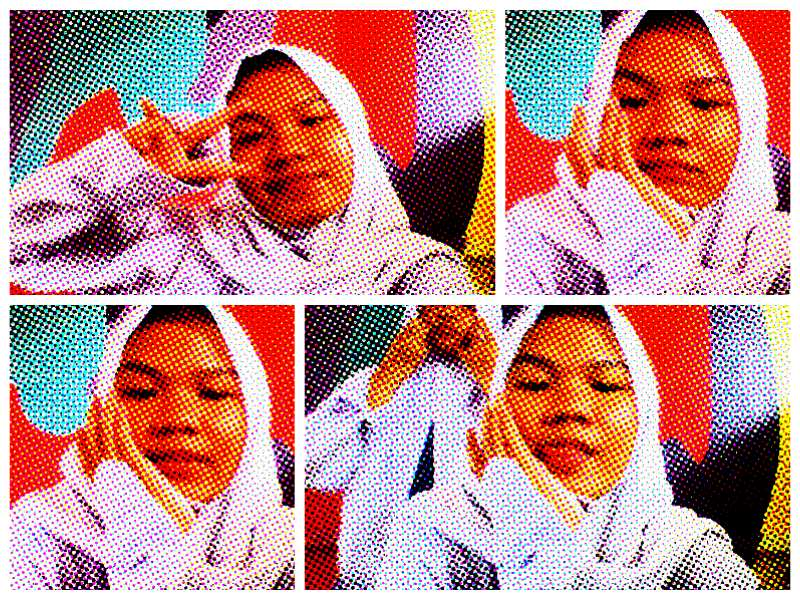

| BIODATA | ||
| Nama: | Maulid Marizka Azzahra A. | |
| Kelas: | XI PPLG 3 | |
| TTL | Semarang,9 april 2007 | |
|  | ||
Halo teman teman perkenalkan nama saya maulid marizka, disini saya akan membagikan keseharian saya melalui web ini. saya berumur 16 tahun, cita cita saya ingin menjadi seorang guru, dari kecil saya mencita citakan ini karena menurut saya guru sangat amat berjasa bagi saya karena sudah memberi ilmu kepada saya hingga saya bisa menulis, membaca, menghitung dll, kebetulan sekarang saya berada di bangku kelas 11 sekolah saya di smk negeri 8 semarang, berikut terdapat kegiatan yang saya lakukan di sekolah.
| waktu | kegiatan |
|---|---|
| 05.00 | bangun tidur |
| 05.10 | mandi |
| 05.30 | siap siap |
| 06.00 | berangat sekolah |
| 06.30 | sampai di sekolah |
| 07.00 | belajar, mengerjakan tugas dari guru |
| 09.15 | istirahat |
| 09.30 | melanjutkan pelajaran |
| 11.45 | ishoma |
| 12.10 | melanjutkan pelajaran |
| 15.00 | ishoma |